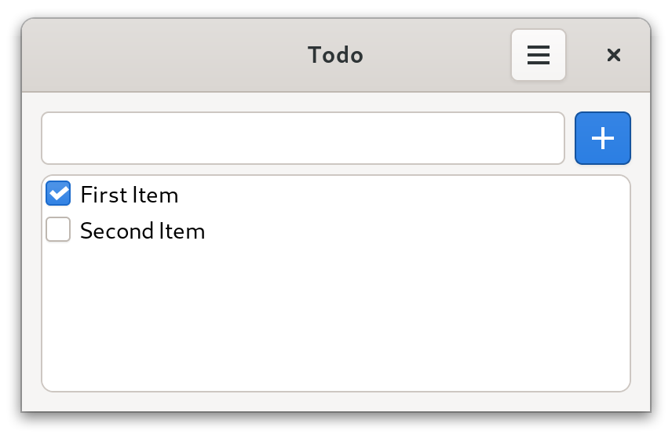
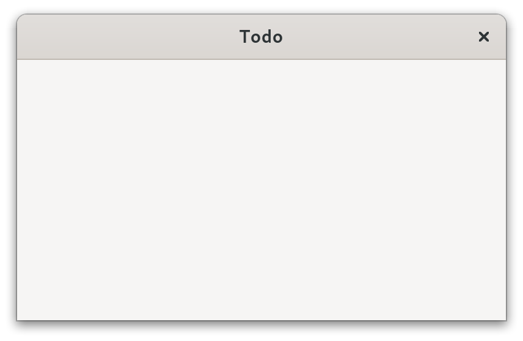

Tutorial
Let's build a simple Todo app using owlkettle. The source code for this example can be found here. Here is what it will look like when it is done.
First we model the application state.
In this case we need to store a list of todo items (todos) where each item has a text and can be marked as done.
We also store the current value of the entry.
type TodoItem = object
text: string
done: bool
viewable App:
todos: seq[TodoItem]
new_item: string
Next we need to define the view method of the application.
For now, an empty window with the title "Todo" is created.
method view(app: AppState): Widget =
result = gui:
Window:
title = "Todo"
To make development easier, we initialize the app with two placeholder todo items.
brew(gui(App(todos = @[
TodoItem(text: "First Item", done: true),
TodoItem(text: "Second Item")
])))
Here is what our application looks like currently:
Let's show the placeholder todo items in a list.
We use a ListBox which contains a Label for each item.
A ScrolledWindow is used to add a scrollbar to the ListBox.
When defining GUIs, we can use structured control flow constructs such as for loops and if statements.
In this case a for loop is used to create a label for each item.
When app.todos changes, the GUI is updated automatically.
Window:
title = "Todo"
Box(orient = OrientY, spacing = 6, margin = 12):
Frame:
ScrolledWindow:
ListBox:
selection_mode = SelectionNone
for it, todo in app.todos:
Label:
text = todo.text
x_align = 0
In order to allow the user to mark items as done, we add a CheckButton next to each label.
The changed event handler is called when the user toggles the CheckButton.
In this case, we update the current state of the TodoItem.
...
ListBox:
selection_mode = SelectionNone
for it, todo in app.todos:
+ Box:
+ spacing = 6
+ CheckButton {.expand: false.}:
+ state = todo.done
+ proc changed(state: bool) =
+ app.todos[it].done = state
Label:
text = todo.text
x_align = 0
Next, we add an entry which allows the user to add new items to the todo list.
The expand attribute of the Box which contains the entry and button is set to false in order to prevent the Box from growing to take up remaining space in the parent widget.
Window:
...
Box(orient = OrientY, spacing = 6, margin = 12):
Box(orient = OrientX, spacing = 6) {.expand: false.}:
Entry:
text = app.new_item
proc changed(new_item: string) =
app.new_item = new_item
Button {.expand: false.}:
icon = "list-add-symbolic"
style = {ButtonSuggested}
proc clicked() =
app.todos.add(TodoItem(text: app.new_item))
app.new_item = ""
Frame:
ScrolledWindow:
...
Finally we add a HeaderBar and a menu which contains a button used to delete all checked items.
Window:
...
HeaderBar {.add_titlebar.}:
MenuButton {.add_right.}:
icon = "open-menu-symbolic"
Popover:
Box(orient=OrientY, spacing=6, margin=6):
Button:
icon = "user-trash-symbolic"
style = {ButtonDestructive}
proc clicked() =
app.todos = app.todos.filter_it(not it.done)
Box:
...
Clicking on the MenuButton opens the menu.
The source code for this example can be found here.
Next Steps
- Improve the Todo App
- Add an option to hide completed items
- Replace the "Delete" button with a
ModelButtonand create a simple menu structure. Check out the popover_menu example for how to create a simple menu structure. - Use
owlkettle/adwto convert the Todo app to a libadwaita application. - Save and load todos from a file
- Check out the other examples
- Start working on your own projects! You might find the following links useful:
- Here is a list of examples
- widgets.md is a reference of all owlkettle widgets
- widgets_adwaita.md is a reference of all libadwaita widgets supported by owlkettle